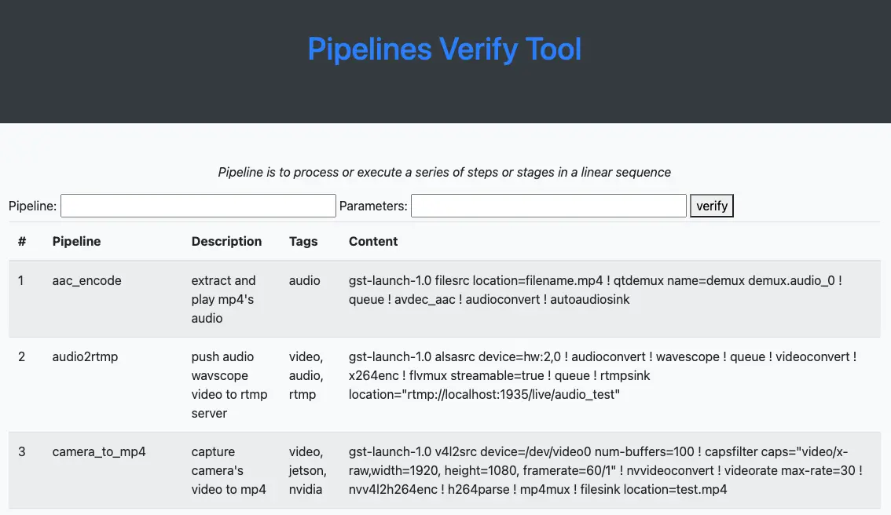

如何快速验证 GStreamer Pipeline?
Posted on Sun 21 April 2024 in Journal
| Abstract | 如何快速验证 GStreamer Pipeline? |
|---|---|
| Authors | Walter Fan |
| Category | learning note |
| Status | v1.0 |
| Updated | 2024-04-21 |
| License | CC-BY-NC-ND 4.0 |
简介
GStreamer是一个开源的、模块化的多媒体框架，它允许开发者轻松地创建各种复杂的媒体处理管道。GStreamer的设计哲学是将媒体处理分解成许多小的、可重用的部分，这些部分被称为“元素”，通过这些元素的组合，开发者可以构建出几乎任何类型的媒体处理应用。
GStreamer由两部分组成：核心库和一系列的插件。核心库提供了管道管理、线程处理、缓冲区管理等基础功能，而插件则提供了具体的功能实现，如解码、编码、渲染等。GStreamer支持多种编程语言，包括C、C++、Python、Java等，这使得它能够被广泛地应用于各种平台和应用中。
GStreamer的架构基于数据流的概念。在GStreamer中，数据以“缓冲区”的形式在元素之间流动。每个元素可以有一个或多个“pad”，pad是元素间数据流的接口。元素通过pad连接，形成管道，数据在管道中从源头流向目的地。
使用GStreamer进行开发，首先需要理解其元素和管道的概念。开发者可以通过编写脚本来定义管道，或者使用图形界面工具如Gst-Inspector和Gst-Editor来可视化地构建管道。GStreamer的插件系统也非常灵活，开发者可以很容易地添加自定义的插件来扩展GStreamer的功能。
挑战
尽管GStreamer非常强大，但它的学习曲线相对较陡，对于新手来说可能需要一些时间来熟悉其概念和API。此外，由于其插件化的架构，管理和维护大量的插件非常麻烦。而将各种各样的插件组合在一起构建自己的应用更是一个挑战
我的方案就是自己写工具来验证, 使用 yaml 来存储 pipeline 的定义, 能够快速验证 pipeline 的定义, 代码其实挺简单, 类似于 gst-launcher-1.0, 但是不必输入那么繁琐的命令行.
我的方案
我写了一个工具 gst-pipeline-verifier, 它的主要目的是通过提供一种简单的方式来验证 GStreamer 管道的正确性，以帮助开发人员在构建和调试复杂的多媒体流应用程序时更轻松地检测问题。
从 https://github.com/walterfan/gst-pipeline-verifier 检出代码, 按照 README 说明的步骤构建并启动, 可以打开 http://localhost: 9090 看到如下页面, 输入 pipeline 点击 verify 按钮就可以执行 pipeline

而 pipeline 的定义都写在 ./etc/config.yaml 以及 ./etc 目录中的其他 yaml 文件中.
pipelines:
video_test:
tags: video, test
desc: display test video
steps:
- videotestsrc num-buffers=100
- capsfilter caps="video/x-raw, width=1280, height=720, framerate=30/1"
- timeoverlay
- identity
- autovideosink
mic_test:
tags: audio, test
desc: play audio from mic
steps:
- autoaudiosrc
- audioconvert
- wavescope
- videoconvert
- autovideosink
rtmp_test:
tags: video, rtmp
desc: push video to rtmp server
steps:
- filesrc location=material/talk.mp4
- decodebin
- videoconvert
- identity drop-allocation=1
- openh264enc bitrate=4000000
- videoconvert
- flvmux streamable=true
- rtmpsink location='rtmp://192.168.104.199:1935/live/talktest'
它的工作原理可以简要概括如下：
- 管道定义: 用户通过定义 GStreamer 管道描述文件来描述要验证的管道。这个描述文件指定了管道中各个元素（例如源、过滤器、解码器、输出等）以及它们之间的连接关系。
- 测试数据准备: 用户可以选择准备不同类型的输入数据，用于作为管道的输入。这可以是本地文件（例如音频或视频文件），也可以是数据流。
- 管道执行和验证: gst-pipeline-verifier 接收管道描述和测试数据作为输入，然后使用 GStreamer 构建并运行这个管道。
欢迎大家试用, 并给予宝贵意见.
本作品采用知识共享署名-非商业性使用-禁止演绎 4.0 国际许可协议进行许可。